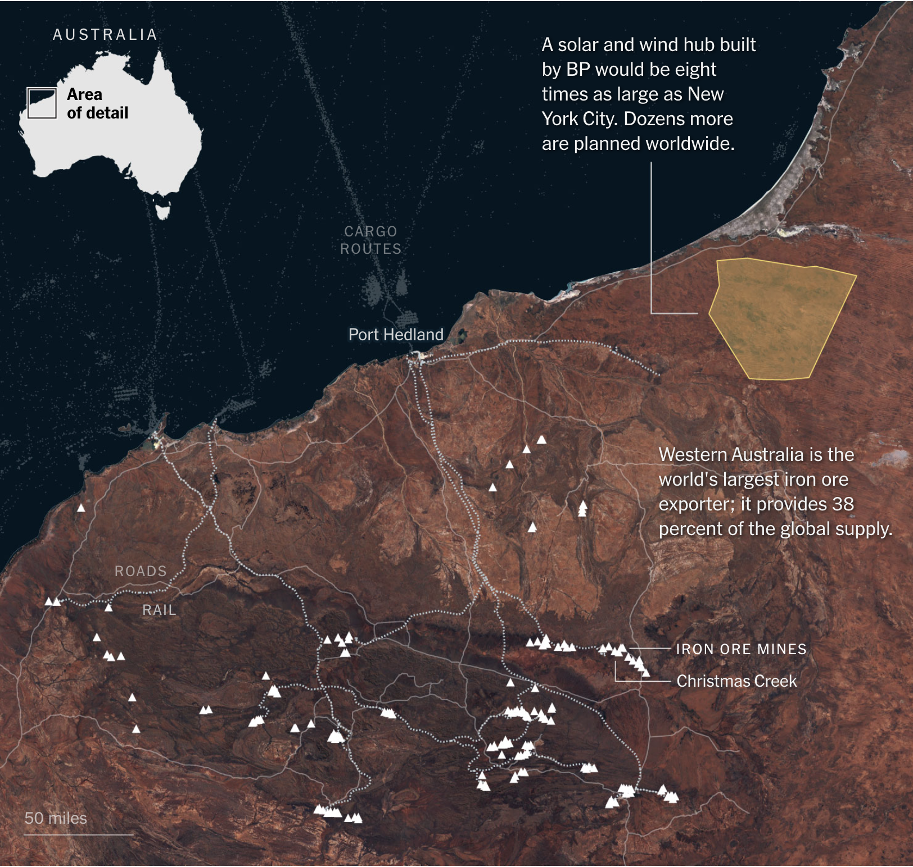
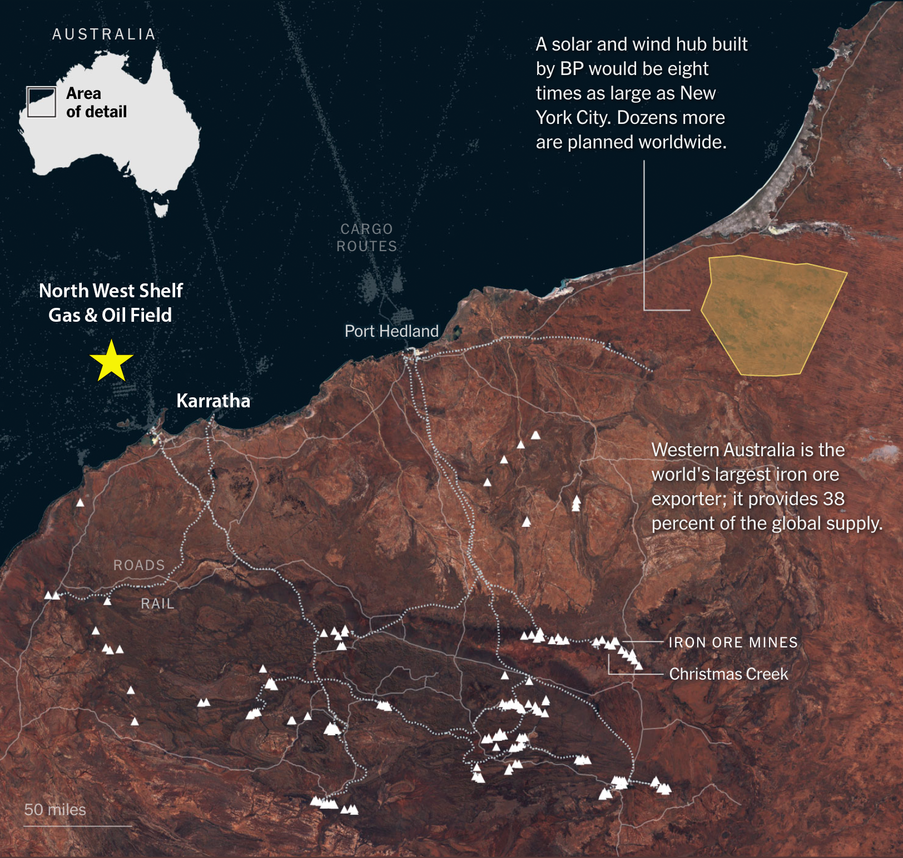

Before I dig in, I was told by a number of readers that my last installment, covering the incredibly daunting task for humanity, climate control, was depressing. That was, in fact, the exact opposite of my intent. It was meant to shift attention from “climate change” (the outcome) to “climate control” (changing the outcome with aggressive, hard-headed engineering.) Unfortunately, plugging our collective ears and hoping it all goes away isn’t a great coping mechanism, and the times they are a-changin’ 1 , whether we like it or not.
I won’t discount the genuine emotional reactions to inconvenient truths, but if you’d prefer something more emotionally harmonized, try the “Climate Change and Happiness” blog instead!
As I foreshadowed in the last installment, I thought I’d cover the latest breathless coverage of “hydrogen as a breakout clean energy play” in a New York Times article titled: “ Inside the Global Race to Turn Water Into Fuel .” The title itself induces an emotional response! It sounds like the plot of a bad Keanu Reeves movie or perhaps a “ water-fueled automobile ” scam. [Both real!]
I’m going to dissect the article, but first, let’s visit the cast of characters (gleaned from various sources on the web) so that you can dial in your views of their possible biases:
Main Author:
-
Max Bearak. BA in international relations from Carleton College, outdoorsy type, and roving beats reporter. He has covered Ebola in Congo, Boko Haram in Niger, and, until the middle of 2022, the Ukraine war for The Washington Post .
Hydrogen advocates:
-
Anja-Isabel Dotzenrath . An engineer by training and a management consultant by pedigree, she joined BP as EVP of Gas and Low Carbon Energy last year after leading RWE Renewables for a few years.
-
Fatih Birol. Executive Director of the International Energy Agency. An electrical engineer turned economist, he started his career at OPEC before joining IEA two decades ago—an energy celebrity best known for stating facts (see John Kerry’s testimonial here ).
-
Andrew Forrest. An “eccentric” in the British sense, the most interesting of the lot, nicknamed “Twiggy” for some obscure (but non-anatomical) reason. He is the second-wealthiest individual in Australia, with most of his net worth coming from his founding stake in Fortescue, an iron ore company in Western Australia. Before forming Fortescue, he was an economics major, a stockbroker, and a failed nickel speculator. He is Australian “old money” with extensive political ties dating from the 19th century. But, to his credit, he wrote a thesis for a Ph.D. in Marine Science at 57. It covers the impact of ocean plastics on mako sharks, apparently studied from his superyacht, which has been converted into a marine research vessel.
Hydrogen critics:
-
Alan Finkel . Trained as an electrical engineer, he conducted seminal work in neuroscience. This led to an instrument company in California that was acquired for $250M in 2004. Later, he was appointed the Chief Scientist of Australia (an independent government advisor) and is now a Special Adviser on Low Emissions Technologies.
-
Saul Griffith. I mentioned Saul in the previous issue. Full disclosure, I consider him a friend. But, for consistent presentation: Saul has received multiple Ph. D.s from MIT, founded more than a dozen companies, and was awarded a Macarthur Fellowship in 2007 for design and engineering. I’m reading his book, Electrify: An Optimist’s Playbook for our Clean Energy Future , and I recommend it if you’d like to tap into more of his remarkable intellect. I’m 100% certain I’ll learn something and come away more starstruck than ever.
-
Marina Domingues . She is a deep hydrogen insider, having written her Ph.D. thesis in Technological Innovation focusing on Hydrogen Technologies. She is currently Executive Secretary of the Brazilian Hydrogen Association and Senior Analyst with Rystad Energy (global energy consulting).
Based on these bios, I already know which team I’d join, although, in practice, I suppose it’d depend on how far open Twiggy’s wallet is. I’m clearly on the side of the critics, so I’ll focus on the statements made by the advocates. Read the article if you want to view the views of my virtual teammates—I’d just be confirming them here.
First, let me opine that Max is a master of composition—it’s a very well-written article that uses both English and HTML effectively. [If any readers are curious but remain behind a paywall, drop me a note.] Plus, he’s being transparently fair and balanced in journalism by choosing advocates and critics equally. But does he convey the scientific facts accurately?
Let’s take a look at the project overview he presented:

The yellow-shaded area represents a combined wind/solar farm expected to produce “26 gigawatts of energy “ 2 to make green hydrogen from seawater (probably) to support iron ore mining. The triangles represent active mines in the area and illustrate transportation routes.
What our characters have to say about this map:
Bearak (NY Times):
The project is one example of a global gamble, worth hundreds of billions of dollars, being made by investors including some of the most polluting industries in the world.
He’s comparing apples and oranges. Project finance in private industry accounts for known investment risks in detail. It is not the same as gambling in Vegas. So, it’s hyperbole. And I don’t think there’s a single measure of “pollution” as a number, so that’s an opinion, not an objective fact.
Dozenrath (BP):
We are about to jump from the starting blocks. I think hydrogen will grow even faster than wind and solar have.
More on this later. I hate to judge, but this is the perspective of a management consultant aiming to please her client. Wind and solar benefit from relying on free inputs and economies of scale for manufacturing.
The article continues, citing various governments’ efforts to create a hydrogen economy through legislation, a topic I covered previously , to support an accelerated growth curve.
Fatih Birol (IEA) as cited by the author:
…said he seldom meets people who don’t find green hydrogen alluring, with its elegant elementality. His organization forecasts that green hydrogen will fulfill 10 percent of global energy needs by 2050. He said the agency’s expectations were based on the fact that, if the world wants to limit warming to 1.5 degrees, “so much green hydrogen needs to be part of the game.”
In other words, “It’s a simple idea that is popular among the Davos class, and we need it to make our spreadsheets work.”
Bearak goes on to say:
For green hydrogen to have a substantial climate impact, its most essential use will be in steel making, a sprawling industry that produces nearly a tenth of global carbon dioxide emissions, more than all the world’s cars.
Wait…what? Is he really confusing iron ore mining with smelting ore into steel? Smelting is a method dating to 2,500 BC that uses coal or charcoal directly to convert ore into metal—you’ve seen the blast furnace pictures. Unfortunately, hydrogen is far from a direct replacement for coal, so this application would require retiring or retrofitting all the steel plants in the world. But, it’s not what the article is about!
Let’s turn to Twiggy and Fortescue:
Bearak calls Dr. Forrest “the most bullish of hydrogen’s backers” and references a two-year-old article covering him in much more detail. In the earlier article, however, he was bullish on using electrons directly instead of hydrogen to produce steel in an electrochemical process similar to electrolysis. Of course, this follows my rule “omit needless conversions”, so I’d be much happier if that were the intent. Regardless, Fortescue is a mining company, not a metal refiner!
Later in the article, Forrest is credited with an astonishing technical assertion;
Fortescue will mix hydrogen with carbon dioxide so it is similar enough in consistency to liquefied natural gas that it can be transported in the same tankers. It’s is as simple as it sounds.
Wait…what? Hydrogen becomes liquid at near absolute zero temperatures, and carbon dioxide is not even a liquid at low temperatures (it’s dry ice). But, if you mix them together, you get something like LNG? Interesting if true, but it would mean some highly unusual chemical behavior. Not only am I skeptical, but I’m also smelling a rat. The conspiracy theorist in me might accuse them of planning to use LNG for their haulers but will counterfeit the fuel by affixing false labels to their trucks. Maybe they plan on using natural gas as a transition fuel and don’t want to buy new trucks. Where does the carbon dioxide come from, and where does it go? If it’s released, then what’s the point of making hydrogen?
The lead engineer on the project, Jim Herring, is quoted as saying:
Diesel has had 120 years to become plentiful and affordable. We want to scale hydrogen up in a tenth of that time. It’s a monstrous challenge, honestly.
Monstrous indeed. Plus, diesel doesn’t require any energy conversion. It’s just pumped out of the ground and refined. And going to scale before profitability is a tried-and-true way of going bankrupt.
In an incredible paragraph, Bearak sums up the epic story he’s trying to sell:
Both Fortescue and BP envision themselves as vying for the lead in green hydrogen and have announced plans to invest hundreds of billions of dollars in projects across dozens of countries beyond Australia, from Oman to Mauritania to Brazil and the United States. Those would still account for only a smidgen of the hundreds of millions of tons the I.E.A. and others say would be needed to create a market in which green hydrogen was cheap enough that steel and concrete makers were convinced to convert their operations.
So, these collaborators in Western Australia are now competitors for the “lead” in an unproven industry that will lose money out of the gate? And they’re spending the GDP of a significant country (larger than either Oman’s or Mauritania’s) to win? And that’s just a “smidgen” of the 10% IEA thinks we need to start conversion? Whoa. It sounds like the recently-reassigned war correspondent required a conflict to write about.
The motivations of the main characters remain obscure, so let’s follow the money:
Bearak states:
Even though both companies [BP and Fortescue] are hugely profitable, Australia’s government has made hundreds of millions of dollars available to them through subsidies and land allocations over the past two years, mostly in Western Australia, which is six times the size of California but has only 2 million people.
Ah. The picture is becoming more evident. The political pressure to “go green” is so enormous that the government is willing to pay even wealthy producers to greenwash.
Energy companies already produce most of the world’s hydrogen fuel, but make it from natural gas, which is, of course, a fossil fuel. Some, including BP, stand to receive federal subsidies in the United States because the company plans to capture the carbon and store it rather than release it.
This is called “blue hydrogen,” and some critics consider it a loophole in the Biden legislation that incentivizes fossil fuel production.
So, that’s where the money is. In responding to purists’ opposition to “blue hydrogen”, BP’s Ms. Dotzenrath said, “It’s ultimately all about the carbon intensity.” That’s true in principle, but the environmental impact still depends on what you do with the carbon dioxide. The article goes on to add nuance to the color of the hydrogen and closes again with a quote from BP’s former management consultant:
Hydrogen is the champagne of the energy transition.
Interesting marketing imagery because, of course, those bubbles in the bubbly are carbon dioxide.
So, why is BP pushing hydrogen? Here’s a potential insight:

Lookie who popped up in the neighborhood, Australia’s most extensive offshore gas field, the North West Shelf ! And there’s an enormous LNG production facility at Karratha! BP is also part of a six-company consortium developing this resource, and, of course, it’s more in their wheelhouse than solar electricity. “ Pay no attention to the man behind the curtain. ”
Crikey! Maybe Twiggy’s bizarre assertion that hydrogen can be transported in LNG trucks has some cunning marketing behind it, after all! More likely, it’s a misdirection play—If Fortescue’s long-term plan is to get into the steel business, it’s not a good idea to telegraph this to your customers. Perhaps he plans to use the electricity to make steel electrolytically but then uses LNG in the mining business. Technically, that would make much more sense, but claiming use for hydrogen might make the subsidies (for a fictitious hydrogen future) accessible!
I suppose this kind of journalism is what you get when you apply the ethos of a war reporter to deconstruct energy technologies, reporting from what appear to be the “front lines” where it’s hard to fact-check. I’d suggest that the editors of the New York Times cover the critics’ view next time! [Hint: Saul is a great place to start, but you’ll have to up your game—send a reporter like Kenneth Chang .]
For my younger readers, please read the lyrics of this classic Dylan song or download any of the excellent covers. My favorite verse:
Come Senators, Congressmen
Please heed the call
Don’t stand in the doorway
Don’t block up the hall
For he that gets hurt
Will be he who has stalled
There’s a battle outside and it is ragin’
It’ll soon shake your windows and rattle your walls
For the times they are a-changin’
This is a frequent mistake. Electricity, measured in watts, is not “energy” but “power”, which is why your electric bill uses kilowatt-hours (energy is power used over time). He cites the peak production capacity of the field, which would only be achieved at noon on a windy day.